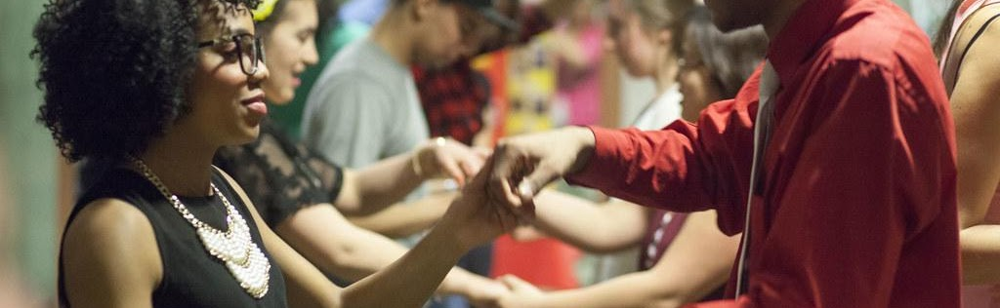
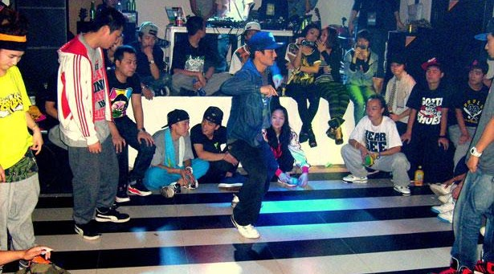

Salsa • Swing • Hip Hop • Line Dance • Jazz • Latin Socials
What's Happening in the Holy City
Charleston, SC has one of the most diverse social dance scenes in the South. Whether you're looking for a Tuesday salsa night on King Street, a line dancing class at a Lowcountry honky tonk, swing socials with Holy City Swing, or hip hop nights at a downtown club — there is a dance floor with your name on it.
Social dancing here isn't niche — it's woven into the city's nightlife, its live music venues, its arts festivals, and its community studios. The scene stretches from the downtown peninsula out to Mount Pleasant, North Charleston, Summerville, and beyond.

Charleston's Social Dance Styles & Where to Find Them
Forte Jazz Lounge at 475 King Street hosts a recurring Salsa Dance Night on Tuesdays — the most popular weekly Latin social on the peninsula. The intimate King Street venue brings a New York-style energy to Charleston's Latin dance community.
Charleston Latin Dance and Dance Lab offer regular group classes for all skill levels. Arthur Murray Charleston on Savannah Highway covers salsa, bachata, cha-cha, and rumba with NDCA-certified instructors. Salsa Vida maintains a live calendar of Charleston-area Latin socials year-round.
Forte Jazz · Tuesdays · King StCharleston has a dedicated swing dance community centered around Holy City Swing — the go-to resource for swing socials, lesson nights, and community events in the area. True to the city's musical roots, swing dancing here blends the classic Lindy Hop and East Coast swing traditions with a distinctly Lowcountry energy.
Watch for swing nights at live music venues across the downtown peninsula, especially those featuring jazz and big band acts. The Charleston Jazz Festival and Spoleto season often create natural crossover events for swing dancers.
Holy City Swing · Jazz Festival SeasonHip hop social dancing in Charleston stretches well beyond the club. Downtown, Club Trio on the peninsula runs hip hop and EDM nights with a serious dance floor energy. Uptown Social on Upper King brings rooftop DJ sets that draw bachelorette crews and locals alike. Music Farm books touring hip hop acts that get the whole room moving.
Off the peninsula, North Charleston's club and showcase circuit — including DJ-driven hip hop and R&B nights — is where the local hip hop dance culture is most active. DivaDance Parties Charleston channels hip hop fitness energy into bachelorette-friendly group experiences.
Club Trio · Music Farm · North CharlestonForte Jazz Lounge — Charleston's only dedicated jazz venue at 475 King Street — is open Wednesday through Saturday and regularly gets crowds on their feet. Headliners include local legends, Grammy winners, and touring acts, with Thursday nights dedicated to the Great American Songbook (Ella, Sinatra, Billie Holiday) and Saturdays going deeper into fusion and Latin jazz.
The Charleston Gaillard Center presents dance companies rooted in jazz tradition including Alvin Ailey American Dance Theater and Dance Theatre of Harlem. The annual Charleston Jazz Festival is the anchor event of the city's jazz calendar every spring.
Forte Jazz · Gaillard Center · Jazz FestivalHonky Tonk Saloon is Charleston's home for country line dancing — weekly classes, Southern hospitality, and a crowd that's there to actually dance. It's consistently one of the most searched-for dance experiences in the city, showing up on every local guide from Yelp to bachelorette planning blogs.
The Commodore and Republic Garden & Lounge also appear in local roundups for line dancing nights. If you're visiting for a bachelorette weekend or just want to learn the basics, Honky Tonk is the clear starting point.
Honky Tonk Saloon · The Commodore · Republic GardenInternational Ballroom Dance Studios has been serving the greater Charleston area since 2006 with NDCA-certified instructors and regular social dance parties. Their events blend waltz, tango, foxtrot, rumba, salsa, and swing in a welcoming, community-first atmosphere — great for beginners and experienced social dancers alike.
Arthur Murray Charleston on Savannah Highway rounds out the ballroom scene with group classes, private lessons, and a competitive program for those who want to take it further. Both studios are social-first: the point is to dance with people, not just drill technique.
International Ballroom · Arthur Murray · Savannah Hwy
Charleston's social dance scene is rich, varied, and genuinely accessible. You don't need a partner. You don't need experience. Every style listed here has beginner-friendly entry points — Tuesday salsa nights at Forte where instructors give a quick lesson before the social, line dance classes at Honky Tonk Saloon, intro nights at Holy City Swing, and group classes at studios across the city.
The easiest move is picking one and just showing up. Charleston's dance community is welcoming by nature — it's a city that takes its hospitality as seriously as its footwork.